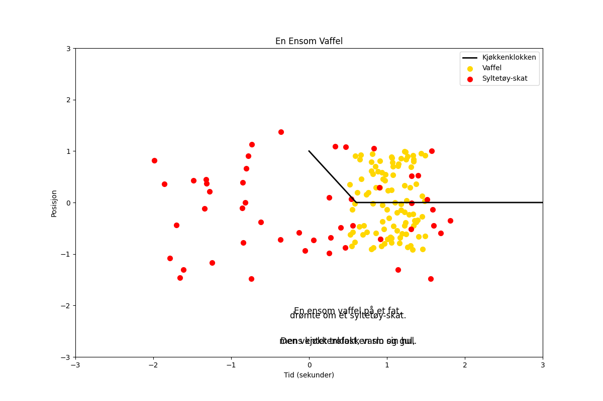

En ensom vaffel på et fat, drømte om et syltetøy-skat. Den ventet trofast, varm og gul, mens kjøkkenklokken slo sin hul.

import matplotlib.pyplot as plt
import numpy as np
# Dikt
dikt = """
En ensom vaffel på et fat,
drømte om et syltetøy-skat.
Den ventet trofast, varm og gul,
mens kjøkkenklokken slo sin hul.
"""
# Tidslinje for kjøkkenklokken
t = np.linspace(0, 60, 100) # 60 sekunder
klokken_slag = np.zeros(len(t))
for i in range(len(t)):
if t[i] % 5 == 0:
klokken_slag[i] = 1
# Vaffel representert som en sirkel
radius = 1
vaffel_x = np.random.uniform(radius - 0.5, radius + 0.5, 100)
vaffel_y = np.random.uniform(-radius, radius, 100)
vaffel_dist = (vaffel_x**2 + vaffel_y**2)**0.5
# Syltetøy-skat representert som en ellipse
a = 2
b = 1.5
x_skat = np.random.uniform(-a, a, 50)
y_skat = np.random.uniform(-b, b, 50)
# Plott
fig, ax = plt.subplots(figsize=(12, 8))
# Kjøkkenklokken
ax.plot(t, klokken_slag, color='black', linewidth=2, label='Kjøkkenklokken')
# Vaffel
ax.scatter(vaffel_x, vaffel_y, color='gold', s=50, label='Vaffel')
# Syltetøy-skat
ax.scatter(x_skat, y_skat, color='red', s=50, label='Syltetøy-skat')
# Tittel og akseetiketter
ax.set_title('En Ensom Vaffel')
ax.set_xlabel('Tid (sekunder)')
ax.set_ylabel('Posisjon')
ax.set_xlim(-3, 3)
ax.set_ylim(-3, 3)
# Legg til dikttekst
for line in dikt.splitlines():
ax.text(0.5, 0.5 - len(line) / 10, line, fontsize=12, ha='center', va='center')
# Legg til legende
ax.legend()
# Lagre figuren
plt.savefig(output_path)execution_ok=True fallback_used=False image_ok=True